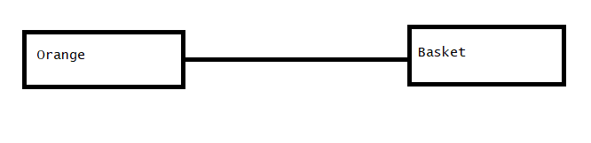
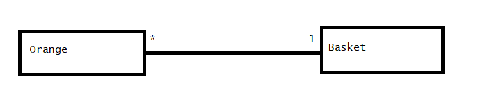
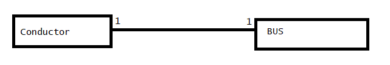
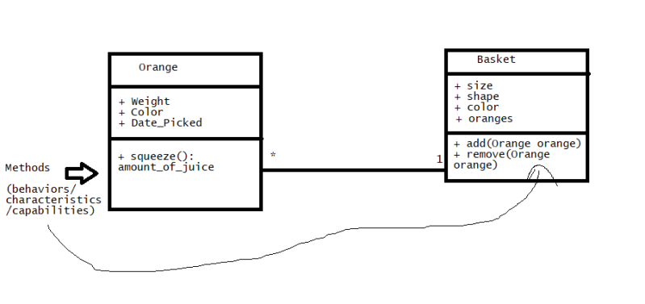
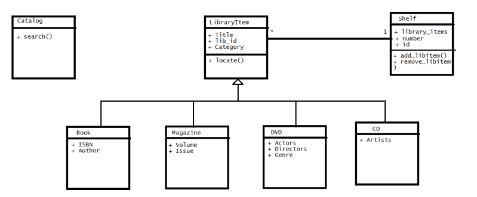

17 Relationships
Relationships (contd..)
- Describe Object Oriented stuff diagrammatically we use UML (Unified Modelling Language)
- I have oranges and i can place oranges in a basket
- Orange is an object
- Basket is an object
- There is a relationship b/w basket and oranges
-
To represent in basic class diagram

-
When we specify a relationship b/w oranges and basket it is many oranges in one basket (many to one)

-
Now lets try cardinality between bus and a conductor

- Line between two classes is association & numbers at the end of the line represent cardinality
- Sample class diagram looks like (note this is not completely correct version) 
Lets try to design objects and their relationships in a library.
- This library has
- Books
- DVDs
- Magazines
- CDs
- The user are librarian and readers. Librarian gives a unique number (lib_id)
- Librarian needs to locate the library items
- Readers will also be given catalog where they can search for existence of book or not
- Lets think of different classes
- Book
- DVD
- Magazine
- CD
- Shelf
- Catalog
- Now lets speak normal english to come up with design
- Book is a LibraryItem
- DVD is a LibraryItem
- Magazine is a LibraryItem
- CD is a LibraryItem
- Shelf has LibraryItem’s
- Now the diagrammatic representation will be something like 
Exercise:
- Create a diagram as shown above for the following problem statement
- A Bank has a savings account, fixed deposit account, recurring deposit account and loan accounts
- Bank Manager/Accountant would like to search with an account number using Account Console
- Customers should be able to see account balance, last transactions
- Also represent Transactions in the diagram.